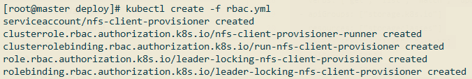
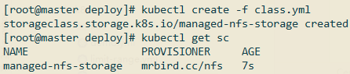
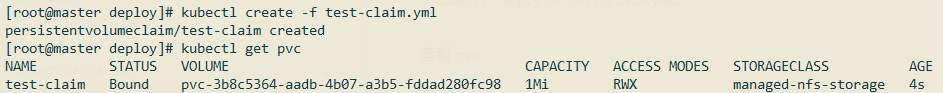
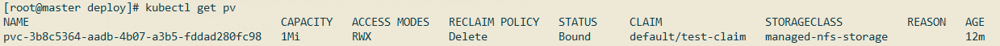
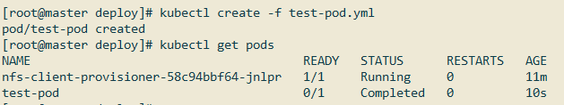
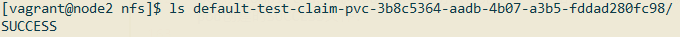
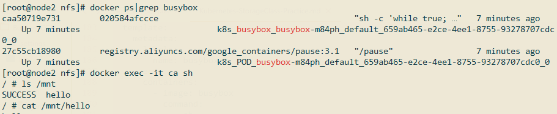
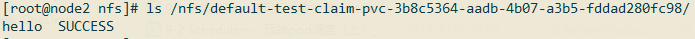

手动创建PV不仅繁琐，还可能造成资源浪费。比如某个PV定义的存储空间为10Gi，该PV被某个声明需要8Gi内存的PVC绑定上了，这时候该PV处于Bound状态，无法再和别的PVC进行绑定，PV上剩下的2Gi内存实际上浪费的。StorageClass可以根据PVC的声明，动态创建对应的PV，这样不仅省去了创建PV的过程，还实现了存储资源的动态供应。
StorageClass构成
StorageClass的定义主要包括名称、后端存储的提供者（provisioner）和后端存储的相关参数配置。StorageClass一旦被创建出来，则将无法修改。如需更改，则只能删除原StorageClass的定义重建。
举个简单的StorageClass配置：
1 | apiVersion: storage.k8s.io/v1 |
不同的StorageClass主要区别在于：不同的存储提供者需要填写不同的参数配置，下面实现个NFS作为动态StorageClass存储的例子。
基于NFS存储类型的实践
NFS环境在上一节已经搭建好了，IP为192.168.33.13，路径为/nfs。
在master节点上克隆相关代码：
1 | git clone https://github.com/kubernetes-incubator/external-storage.git |
切换到external-storage/nfs-client/deploy目录：
1 | cd external-storage/nfs-client/deploy |
创建RBAC：
1 | kubectl create -f rbac.yml |

接着部署NFS Client Provisioner，部署前修改deployment.yml：
1 | apiVersion: apps/v1 |
然后创建该deployment：
1 | kubectl create -f deployment.yml |
修改class.yaml配置：
1 | apiVersion: storage.k8s.io/v1 |
创建这个StorageClass：
1 | kubectl create -f class.yml |

创建PVC，PVC的定义对应test-claim.yml：
1 | kind: PersistentVolumeClaim |
创建这个PVC:
1 | kubectl create -f test-claim.yml |

状态为Bound，说明已经成功绑定上了存储。
查看PV，会看到系统自动创建了PV： 
自动创建的PV名称为pvc-3b8c5364-aadb-4b07-a3b5-fddad280fc98。
最后，修改test-pod.yml配置：
1 | kind: Pod |
该Pod主要就是通过busybox在/mnt目录下创建了个SUCCESS文件。
创建该Pod：
1 | kubectl create -f test-pod.yml |

状态为Completed，说明busybox成功执行完了命令并结束了。如果一切顺利的话，在192.168.33.13的/nfs目录下会看到busybox pod创建的SUCCESS文件:

可以看到/nfs目录下新增了一个目录，目录名称格式为：[namespace]-[pvc名称]-[pv名称]。
我们还可以玩一下另一个测试，新建一个test-pod-rc.yml文件：
1 | apiVersion: v1 |
上面busybox做的事情很简单，就是无限期休眠。创建该rc：

可以看到，pod分别部署到了node1和node2上。到node1节点上，进入busybox容器内部的/mnt目录，在该目录下创建一个hello文件：

然后到node2节点上，进入busybox容器内部/mnt目录，观察刚刚在node1节点busybox容器内部创建的hello文件是否已经同步过来了：

可以看到，文件同步成功。并且前面例子创建SUCCESS也同步过来了，这是因为它们指定了同一个PVC。
回到NFS服务器的/nfs目录下，可以看到刚刚创建的hello文件：
